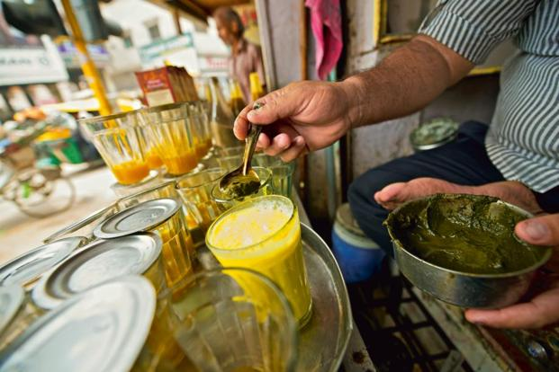

Banarasi Thandai
Thandai, the quintessential summer drink of Banaras makes its appearance on the auspicious occasion of Holi. This drink was first introduced by rich Gujarati and Marwari merchants who settled down in the holy city centuries ago. The thandai prepared by these families on important occasions was made from floral extracts of gulab (rose), ruh bela (Arabian jasmine), gudhul (hibiscus) and local flowers and mixed with dried fruits, melon seeds, watermelon seeds, fennel seeds and lotus seeds and spices like saffron and cardamom and ground to a fine paste. It was then diluted and added to fruit juices. As Banaras is famous for its excellent quality milk and milk products, thandai took on a new avatar and became a milk-based drink with loads of malai and dried fruits. The original thandai of floral extracts is still available in certain shops in Old Banaras. The creamy kesaria thandai is prepared by soaking a certain measure of fennel seeds, poppy seeds, cashew nuts, almonds, peppercorns (both black and white), dried rose petals, melon seeds, cardamom and a couple of strands of saffron threads for at least 2 to 5 hours. This entire mixture is then ground to a smooth paste using a grinding stone or mortar and pestle. A little sugar is added as the mixture becomes finer in texture. This thick paste is mixed with a little chilled milk or water and transferred into a bottle and refrigerated. A specific measure of this freshly prepared concentrate is poured into a kulhad or glass tumbler. A little chilled milk is added followed by a dollop of malai and another measure of chilled milk. The contents are thoroughly mixed and shaken well and served in kulhad or glass tumbler. The immensely popular bhaang wali thandai is made using a fine paste of marijuana leaves. A generous spoon of this marijuana paste is added to the thandai, strained, shaken well and served in a kulhad or glass tumbler. The bhaang wali thandai sells like hot cakes during Maha Shivaratri and Holi. The bhaang wali thandai is not recommended for everyone as it is quite likely to send your head spinning! Besides the floral extract thandai, kesaria thandai and bhaang wali thandai, there are fruity, ginger and other flavoured thandai available in Old Banaras. Locals recommend the shops of Badal Thandai, Mishrambhu Thandai and Guru Thandai to sample this exotic Banaras original.
